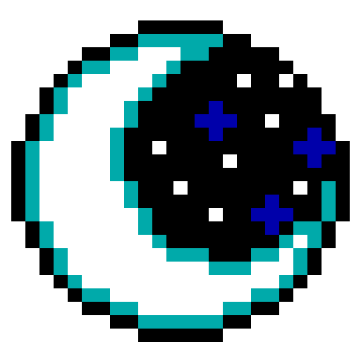
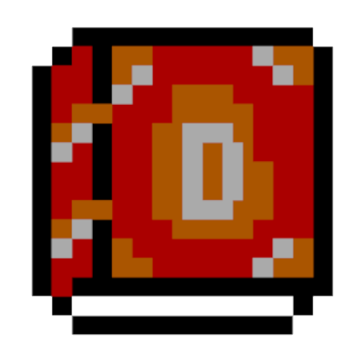
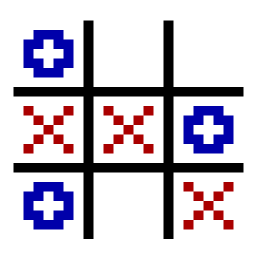
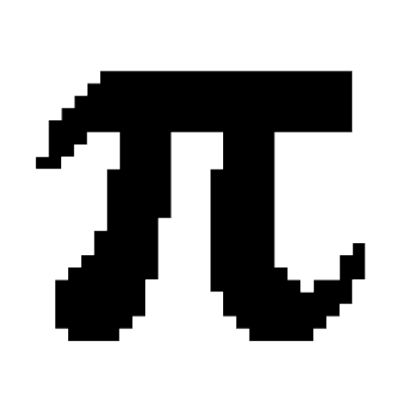

/home/felipe/projetos
Paint CLI
Um paint que permite que seja feito desenhos diretamente via terminal

Lazy Moon
Projeto de TCC do curso técnico de Redes de Computadores no SENAI
Consiste em um conjunto de scripts de monitoramento e gerenciamento de rede LAN que pode ser acessado por redes externas (WAN)
Rádio Terminal
Criado para ouvir músicas de rádios online com interface CLI feita em bash
Possui versão simplória sem interface para ser executada via cmd do Windows

Diário SH
Realizar a criação e organização de um diário, fornecendo serviço de backup utilizando um e-mail para salvar
Guess Number
Jogo Guess Number feito para se jogar single player ou multiplayer LAN

Tic Tac Toe
Jogo "Tic Tac Toe", ou "Jogo da Velha" feito em C++ sendo jogado no terminal entre duas pessoas localmente
Jokenpô
Jogo jokenpô (ou pedra papel tesoura) feito em Shell Script para ser jogado via terminal

Backup Terminal
Uma maneira simples de realizer o backup de um arquivo para um e-mail via terminal
Matemática
Coletânea de mini programas que realizam processos matemáticos
